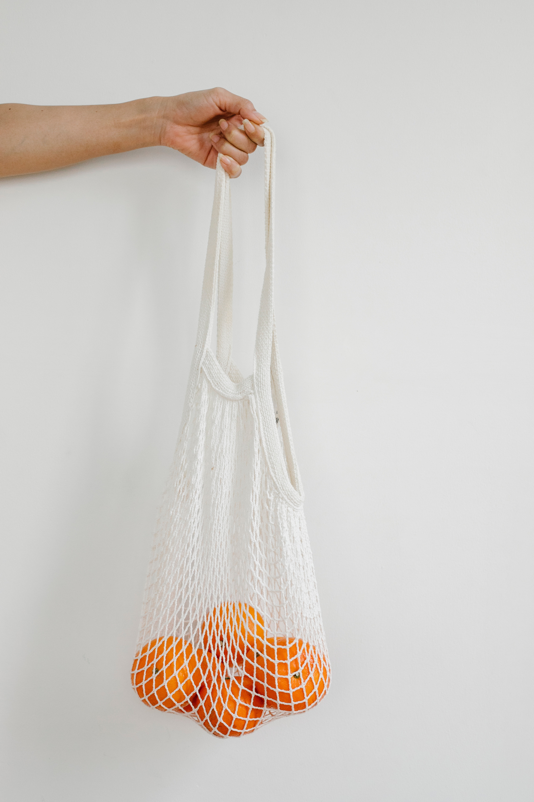
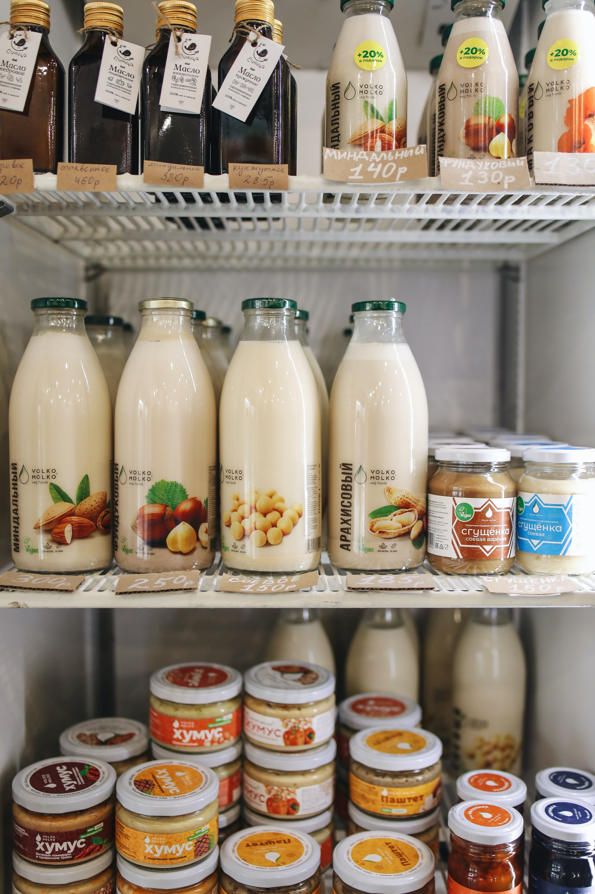
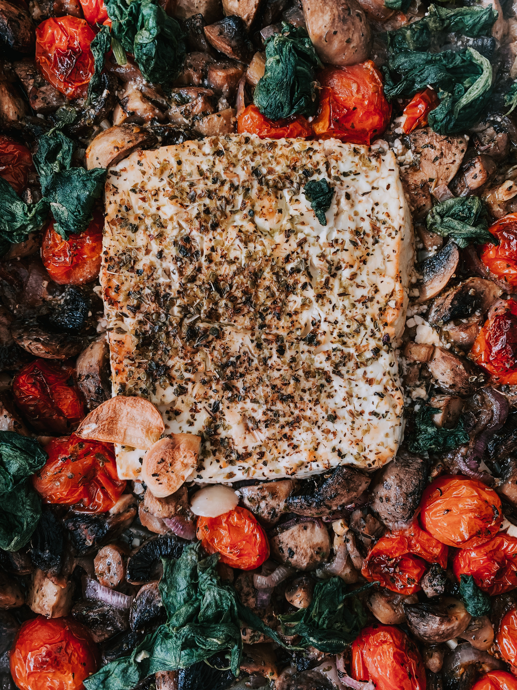

<section class="overflow-hidden pt-10 lg:pt-[80px]">
    <div class="container mx-auto">
      <div class="-mx-4 flex flex-wrap items-center justify-between">
        <div class="w-full px-4 lg:w-6/12">
          <div class="-mx-3 flex items-center sm:-mx-4">
            <div class="w-full px-3 sm:px-4 xl:w-1/2">
              <div class="py-3 sm:py-4">
                
              </div>
              <div class="py-3 sm:py-4">
                
              </div>
            </div>
            <div class="w-full px-3 sm:px-4 lg:w-1/2">
              <div class="relative z-10 my-4">
                
              </div>
            </div>
          </div>
        </div>
        <div class="w-full px-4 lg:w-1/2 xl:w-5/12">
          <div class="mt-10 lg:mt-0">
            <h2 class="uppercase text-3xl lg:text-4xl font-bold leading-9 text-gray-800 text-sm-verde-escuro mb-12">
              Vem Conhecer o Nosso 
            <span class="text-3xl lg:text-4xl leading-9 text-gray-800 text-sm-verde-claro font-thin">Projeto</span></h2>
            <p class="mt-12 text-2xl text-gray-600">
                Bem-vindo ao nosso projeto sobre o desperdício alimentar, um espaço dedicado a combater esse problema global sem objetivos de lucro. 
                Aqui, estamos unidos por uma causa em comum: reduzir o desperdício de alimentos e promover um futuro mais sustentável. 
            </p>
            <p class="mt-6 text-2xl text-gray-600">
              Através das nossas ferramentas descobre os cafés e restaurantes mais sustentáveis. 
              Torna o teu quotitiano amigo do meio ambiente.
            </p>
            <p class="mt-6 text-2xl text-gray-600">
              Faz a tua simples pesquisa na ferramenta "mapa" fornecida e procura os teus lugares 
              favoritos e visita-os! 
            </p>
          </div>
        </div>
      </div>
    </div>
</section>